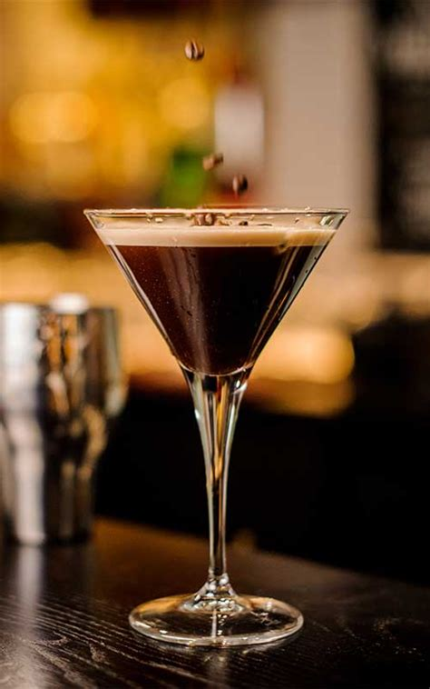

Espresso Martini

Description
Espresso Martini is a modern classic that quickly became one of the most popular
cocktails in the world. As a drink, it's a delicious bitter-sweet combination of
vodka, coffee liqueur and espresso.
When made properly, it's sophisticated, edgy and unexpectedly strong.
Ingredients
- 1 fluid ounce vanilla flavored vodka
- 2 fluid ounces coffee-flavored liqueur
- 1 fluid ounce cream or milk
- 1 cup crushed ice
Instructions
- Combine vodka, coffee liqueur, cream and crushed ice in a cocktail shaker.
- Shake vigorously to chill.
- Pour into martini glasses, and serve.